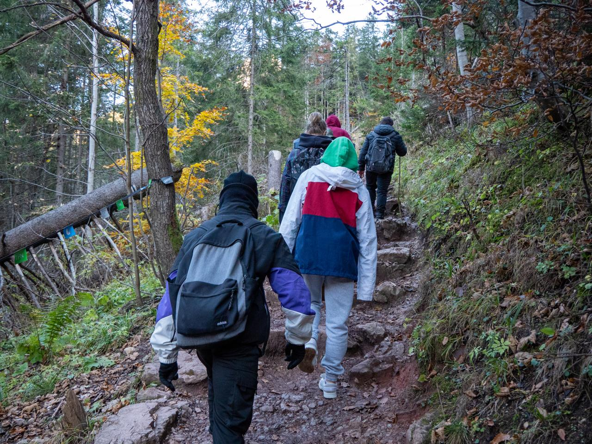
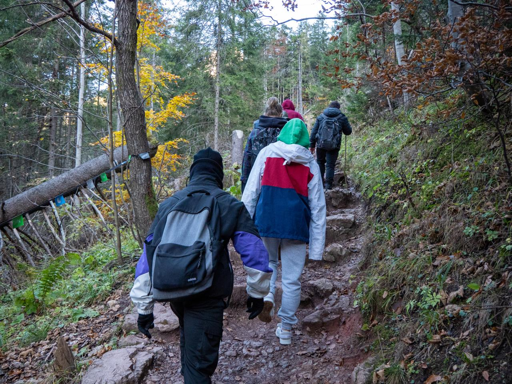

Hiking is more than just a hobby for me; it’s a way to reconnect with nature and challenge myself both physically and mentally. One of my favorite routes is the **Five Lakes Trail**, a breathtaking 12-kilometer hike located in the heart of the Tatra Mountains near Zakopane, Poland. The trail starts with a gentle ascent through a lush forest, where the sound of rustling leaves and chirping birds accompanies every step.
As the path winds higher, the trees thin out, revealing panoramic views of glacial lakes and rugged peaks. Each of the five lakes has its own unique beauty, from emerald-green waters to reflections of towering mountains. There’s nothing quite like the feeling of standing by the water, with the crisp mountain air filling your lungs.

What makes this trail so special is reaching the summit, where you can see all five lakes below, surrounded by the dramatic peaks of the Tatra Mountains. The descent is equally rewarding, especially if you catch the sunset painting the landscape in hues of orange and pink.
Route Details
- Distance: 12 kilometers (round trip)
- Difficulty: Moderate to Challenging
- Elevation Gain: 800 meters
- Duration: 5-6 hours
Interactive Map
What to Bring
To make the most of this adventure, I always pack the essentials:
- Comfortable hiking boots
- A lightweight backpack
- Plenty of water (at least 2 liters)
- Snacks and energy bars
- A waterproof jacket, as weather can change rapidly
- A camera to capture the incredible views
Photo Gallery
 

Helpful Links
If you’re interested in hiking this trail or planning your own adventure, here are some helpful resources:
Final Thoughts
Every time I hike the Five Lakes Trail, I discover something new—whether it’s a hidden viewpoint, a unique reflection in the lakes, or just a deeper appreciation for the beauty of nature. If you’re ever in Zakopane, I highly recommend this trail for an unforgettable experience!